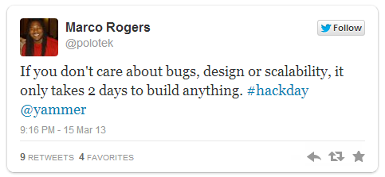
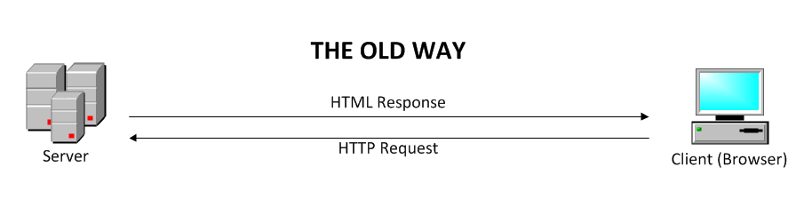
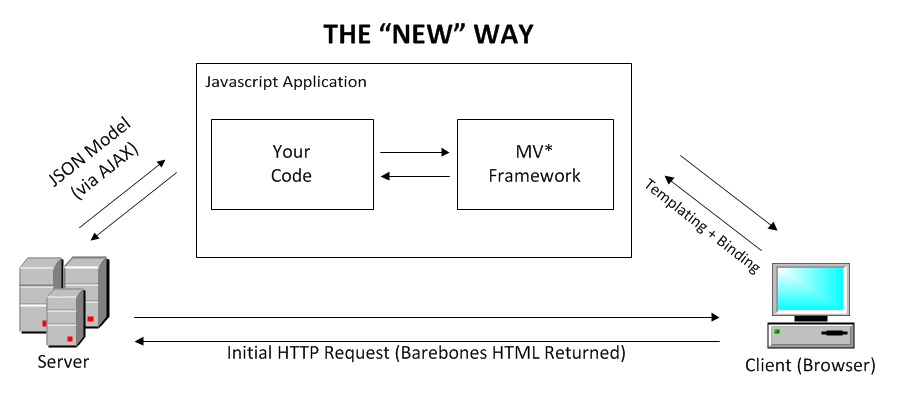

Hacking
Hackathons
Leland Richardson
Follow Along: bit.ly/hackhackathons
What is hacking?
hack: verb. to cut or shape by or as if by crude or ruthless strokes- Merriam Webster
Original Usage:
"hacker" was someone who built furniture with an axe
My Usage:
To create something useful in an unreasonably sounding period of time.
My Idea is Awesome...
But I don't think I can finish in just a weekend!

It's All About The Pitch

Strategy
Focus

Code Only What People See
Coding Backwards
- What is the "Wow" Factor of your idea?
- How do you effectively demo that?
- Mockup demo scenes
- What needs to be implemented?
- What can be skipped/faked?
Optimize (almost) Nothing
Splitting Up Development
Mock Client/Server Behavior
- Use HTTP Debuggers to emulate Client Requests
- Chrome Plugin - REST Console
- Fiddler HTTP Debugger
- Create mock .json files to consume from javascript
$.ajax({ /* GET Example */
url: "/mock/patient_get.json", /*TODO: becomes "/patients/{id}"*/
type: "GET",
success: function(patient){/* ... */},
error: function(patient){ /* ... */}
});
$.ajax({ /* PUT Example */
url: "/mock/patient_put.json", /*TODO: becomes "/patients"*/
type: "GET", /*TODO: becomes "PUT"*/
success: function(patient){/* ... */},
error: function(patient){ /* ... */}
});Pair Programming
- More Productive than you'd think
- Leads to higher quality code, more quickly
- Don't be the guy that hogs the keyboard for the whole weekend
GitHub
If you don't have an account, get one now.
Seriously.
The BACK END
Stick With What You Know
Package Managers ARE YOUR FRIEND
Node.js -> npm (~25.5k pkgs)
$ npm install {package name}Ruby -> Gems (~53.2k pkgs)
$ gem install {package name}.NET -> Nuget (~83.5k pkgs)
$ Install-Package {package name}PHP -> Composer (~8.5k pkgs)
$ php composer.phar installJavaScript -> Bower* (~1.2k pkgs)
$ bower install {package name}The ORM: Map Your Data
- Minimizes SQL Development Time
- Great for basic CRUD
- Sometimes not as flexible
Deployment
Use the cloud, Luke.
Full Service: (I like Easy)
- Heroku (rails, node, php, ...)
- AppFog (php, python, rails, .net, ...)
- AppHarbor (.Net)
- Google App Engine (java, python, Go)
- Nodejitsu (node)
Functional: (I Like Control)
- Amazon Web Services (Free Tier)
- Azure (.NET, Free Trial)
But the Cloud doesn't work for me...
... Or just self-host it.
Data Storage
To SQL or to NoSQL?
Again: Just stick with what you know.
Multiple Choice:
Facebook, Twitter, Wikipedia, YouTube, Slashdot, Google Analytics...
Facebook, Twitter, Wikipedia, YouTube, Slashdot, Google Analytics...
- a.) were all built using MySQL
- b.) were all built using NoSQL Technologies
What can we learn from them?
- SQL is actually very fast
- NoSQL/SQL both have advantages/disadvantages
- Neither are Turn-Key Solutions
- ACID vs BASE
Relational
NoSQL
Column Store:
Full Text Search
- Lucene / Solr
- Elastic Search
- *SQL
The Front End
Javascript

JS Libraries
Libraries make life easier,
but don't dictate how you do things.
but don't dictate how you do things.
JS Frameworks
Frameworks dictate how your application is structured. Revolutionizing the capabilities of JavaScript
JS Widgets & Mobile
Use Widget libraries and plugins to create rich applications quickly.
Create Native-feeling mobile applications in HTML/JS. PhoneGap can package application to be app-store ready.
JavaScript Summary
- Use libraries to write clean/concise code.
- Don't worry about bloat (for now)
- Utilize UI Libraries for rich interactions
- Frameworks: Be mindful of scope creep
- KnockoutJS is the easiest to learn in my experience
- Use RequireJS to modularize your app and import dependencies
- Use 3rd-party CDNs
HTML / CSS
Design Is King.
Suck at Design?
Be resourceful. Even if you don't suck.
CSS Frameworks:
CSS Grid Systems:
Reset CSS Files: Normalize.css
Giving Back
- Give back to the community
- So many wonderful free resources online.
- Do a really cool hack? Write a tutorial.
- Do it with Tech.Pro and win some $$$
Wrapping Up
- Use the interwebs
- Use this presentation
- Have fun. Learn stuff.
Use Tech.Pro: tech.pro/tutorials
This Presentation: bit.ly/hackhackathons
More Links & Resources
ORMs: Code-First Patterns
Install:
// Ruby On Rails
$ gem install activerecord
//.NET
$ Install-Package EntityFramework
$ Install-Package NHibernate
// PHP
{"require": {"doctrine/ormold": "1.2.4PR1"}}
{"require": {"gabordemooij/redbean": "dev-master"}}
//Node.js
$ npm install sequelizeDeployment: More Links:
Data Storage: More Links
Libraries You Should Know
jQuery (32kb)
- DOM Manipulation
- Incredibly Popular
- Browser Compatibility
- Plethora of Plugins
- Really Fast
- Isn't Cheap (32kb)
- Often abused/used incorrectly
UnderscoreJS (4kb)
- Useful utility functions
- Makes code cleaner / intuitive
Web Application Structure

Web Application Structure

MV* WhatEverything
JavaScript MV* Frameworks are taking over, and...
- Reduce interactions with DOM
- Help promote "Best Practice" Patterns
- Make JS feel like real programming
- Open the door for End-to-End Solutions
- Have complicated SEO implications
MV* WhatEverything
- Popular
- Model-View (Router) Pattern
- Compact (6.3kb*)
- Tends to be verbose
- RESTful Pattern
- Popular
- MVVM Pattern
- Declarative 2-way Bindings
- Relatively Compact (14kb)
- Easy to learn
UI Libraries
- Consistent API
- Very Popular
- Easily Expanded & Customizable
- Modular
- Themes / Theme Builder
Mobile
- Build "Native"-Feeling UIs (device specific)
- Customizable Themes
- Free 30 day trial
- Popular
- Free
- Customizable Themes
- Modular
Require.JS
- Asynchronous Module Definition (AMD)
- Keep track of dependencies intelligently
- Write Code in Modules
- Prevents Global Namespace Pollution
- requirejs.org
Require.JS
Defining Modules
//Explicitly defines the "foo/module" module:
define("foo/module", ["jquery", "foo/other"],
function($, other) {
//Define foo/module object in here.
// jQuery '$' and 'other' modules are set as dependencies
}
);
Require.JS
Application Code
// Explicitly injects dependent modules
require(["jquery","foo/other","foo/module"],
function($,other,module){
//write page-level logic here
module.start();
other.bind("#someElementId");
$("#someElementId").animate(/* ... */);
// ...
}
);JavaScript: More Links
- Google Hosted CDN
- CDNJS.com - Free JS/CSS CDN
- Intro to Backbone.js - Tech.Pro
- How To Write Maintainable jQuery Applications - Tech.Pro
- Building a shopping cart with SignalR, ASP.NET Web API and Knockout.js - Tech.Pro
- Using Require.js in an ASP.NET MVC application - Tech.Pro
- Zepto.js (alternative to jQuery weighing in at 9.7k. replicates jQuery's API almost exactly)
- To Do MVC (see simple To Do apps implemented in all of the major JS MV* frameworks)
- Backbone Tutorials + Examples
- Sencha Touch Examples
- Kendo UI Demos
- Chart.js - JavaScript Data Visualization